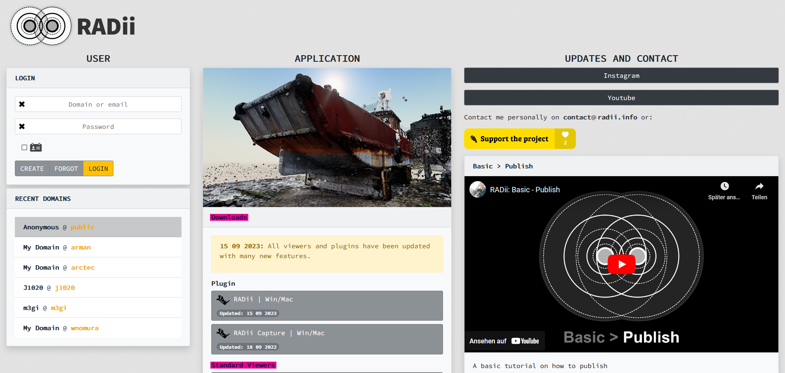

Setup¶
“Viewer PC/Mac”¶
To explore models in Radii you need a viewer, this is a programm that enables you to join a server (we call them channels) and download the models. Viewers are available for a number of different operating systems such as Windows/Mac, IPhone/Android and Oculus. The viewers are generally the same but have some differences, usually due to computing power.
Download the latest Radii Viewer from https://radii.info/
- Register in the user panel and confirm your email
it is not neccecary to set a domain name
Install the file
Start RADii Viewer
Congratulations you have installed Radii. On how to use Radii consult the Quick Guide and the Viewer documentation
Grashopper Plugin¶
The plugin enables you to publish (send) 3D modells and other geometry. Publishing works simillar to a Radio station, geometry can be reiceived by others as long as they are connected to the same channel as the sender.
Download the lastest Radii Plugin from https://radii.info/
- If you did not already: Register in the user panel and confirm your email
it is not neccecary to set a domain name
Unpack the .Zip file
Drag & drop the Radii.gha file it into the Rhino Grashopper window, you open it by typing the “grashopper” command in rhino
Check if the install was succesfull, it should be visible in one your tabs as shown below.
Congratulations ! you have installed Grashopper Radii. On how to publish consult the Quick Guide and the Radii Grashopper documentation
Oculus¶
Please be aware that the Oculus and its environments are subject to frequent changes, the following tutorial might be out of date or diverge slightly from the current state. We are hoping to release a viewer through the app store at a later stage.
Download the advanced version of sidequest from https://sidequestvr.com/ and install it
Download the .apk file from Radii.info in the Download section
Set your Oculus account to developer mode (you have to be part of a developer organization), log in to your account on your device and enable Settings > System > Developer, and then turn on the USB Connection Dialog option.
Connect the Oculus to your device and start side on the later
Allow for debugging on your Oculus
On sidequest select the install .apk file and install
To find the Radii Viewer app on Oculus:
Select the app libary
Filter apps for unkown sources
Start Radii Viewer VR
Congratulations you have installed Radii on your Vr device